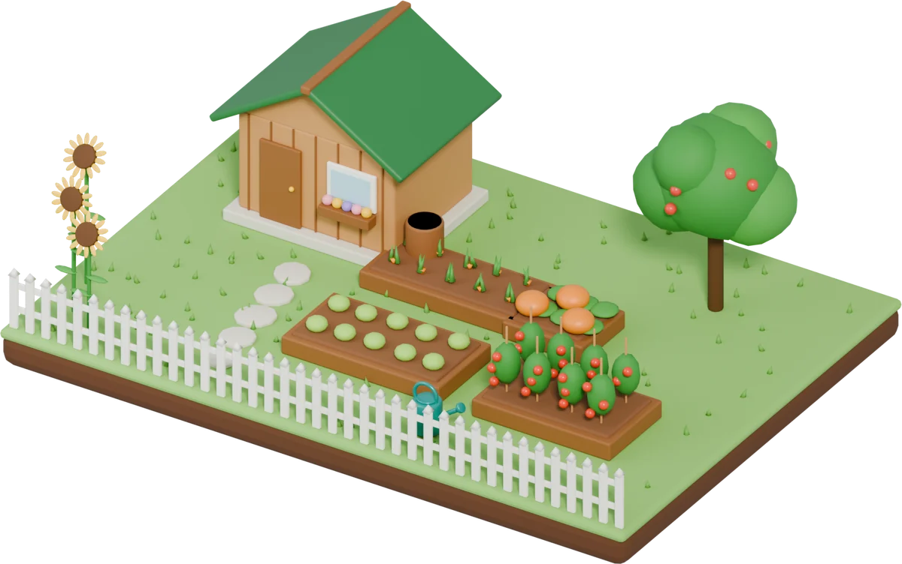
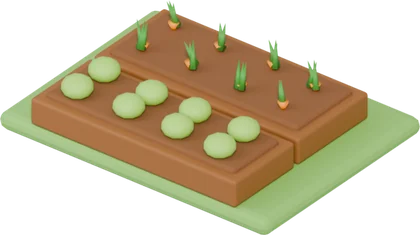
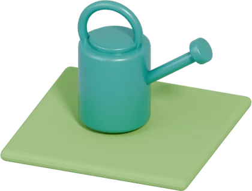
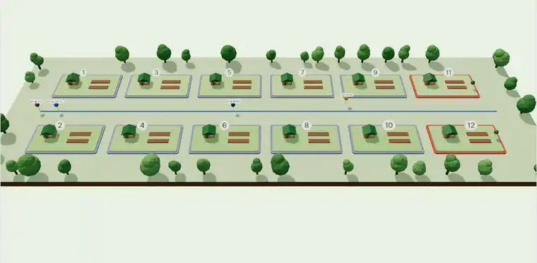
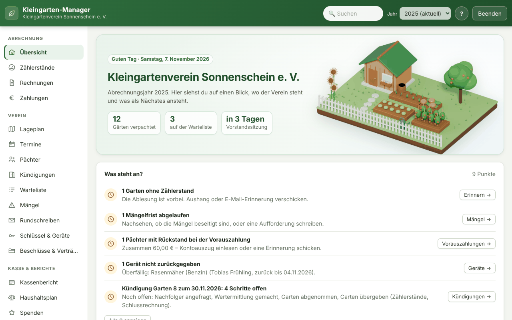
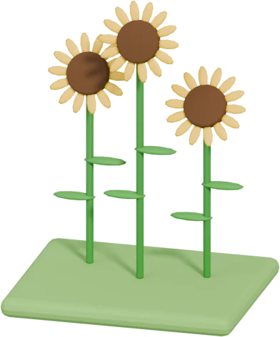

Das Vereinsbüro für euren Kleingartenverein.
Pächter einmal anlegen, jedes Jahr nur noch die Zählerstände eintragen – die Rechnungen kommen fertig heraus. Dazu Kasse, Lageplan, Kündigungen und alles, was ein Vorstand sonst in Ordnern sucht.

In drei Schritten zur Jahresabrechnung
Was früher ein Wochenende mit Excel war, ist jetzt ein Nachmittag.
Verein, Preise und Pächter eintragen – oder die Pächterliste aus Excel übernehmen. Das bleibt für alle Folgejahre.

2Zählerstände eintragenGartennummer tippen, Wasser und Strom eingeben. Vorjahresstände kennt das Programm, gerechnet wird automatisch.

3Rechnungen verschickenAlle Rechnungen mit einem Klick als PDF, mit QR-Code zum Bezahlen – per Post oder vorbereitet für die E-Mail.
Die ganze Anlage auf einen Blick
Der Lageplan zeigt jeden Garten an seinem Platz – auf Wunsch als 3D-Modell zum Drehen. Die Farbe verrät den Abrechnungsstand.

Alles, was ein Vorstand braucht
Gemacht mit Vorständen und Kassenwarten – für die Arbeit, die wirklich anfällt.
PDF je Pächter mit GiroCode für die Banking-App, Postversand in einer Datei, E-Mail vorbereitet.
Bezahlt abhaken oder die CSV aus dem Online-Banking einlesen – das Programm ordnet zu. Mahnungen auf Knopfdruck.
Kassenbericht mit Belegen, Kassenprüfer-Zugang, Haushaltsplan mit Plan und Ist, Jahresbericht für die Versammlung.
Gärten wie auf dem Gelände, mit Parzellen-Umrissen, Leitungen und Einrichtungen – als Aushang oder in 3D.
Frist prüfen, Bestätigung drucken, Wertermittlung, Schlussrechnung und Übergabeprotokoll – Schritt für Schritt.
Die Übersicht meldet von selbst: Ablesung, Versammlung, offene Zahlungen, Kündigungstermine, Wasserschwund.
An alle oder ausgewählte Pächter – per E-Mail (Bcc) und als Serienbrief für alle ohne E-Mail.
Dokumente je Garten, Pachtvertrag zum Unterschreiben, Beschlussbuch, Vereinsverträge mit Kündigungsfristen.
Automatische Sicherungen, Passwortschutz, DSGVO-Auskunft und Löschfristen – alles auf dem eigenen Rechner.
So sieht es aus
Klar, ruhig und gut lesbar – auch für alle, die nicht jeden Tag am Computer sitzen.

Eure Daten bleiben im Verein.
Der Kleingarten-Manager läuft auf eurem Rechner. Es gibt kein Konto, keine Cloud und keine Übertragung von Mitgliederdaten – nur auf Knopfdruck fragt er bei GitHub, ob es eine neue Version gibt.
- Keine Anmeldung, kein Abo
Herunterladen, doppelklicken, loslegen. - Automatische Sicherungen
Bei jeder Änderung, vor heiklen Schritten und vor jedem Jahreswechsel – mit Wiederherstellen per Klick. - DSGVO-Hilfen eingebaut
Auskunft je Person, endgültiges Löschen auch aus Sicherungen, Bereinigung nach Aufbewahrungsfrist. - Amtsübergabe leicht gemacht
Die Vereinsakte packt alles für den Nachfolger in eine Datei – mit Lies-mich-zuerst.
Häufige Fragen
Was kostet das Programm?
Nichts. Der Kleingarten-Manager ist kostenlos, ohne Abo und ohne versteckte Kosten.
Läuft es auf meinem Rechner?
Auf Windows 10 und 11 als einzelne .exe-Datei ohne Installation, auf macOS als App für den Programme-Ordner.
Können mehrere Vorstandsmitglieder damit arbeiten?
Ja – liegt der Datenordner auf einem USB-Stick oder Netzlaufwerk, sorgt eine Sperre dafür, dass nie zwei Rechner gleichzeitig ändern.
Kann ich es erst ausprobieren?
Ja. Auf Knopfdruck lädt das Programm einen erfundenen Beispielverein, den du mit einem Klick wieder entfernst.
Wie kommen unsere bisherigen Daten hinein?
Die Pächterliste lässt sich aus Excel oder einer CSV-Datei übernehmen. Zählerstände des Vorjahres werden dabei mitgenommen.

Bereit für die nächste Abrechnung?
Kostenlos für Windows und macOS.
⬇ Kleingarten-Manager herunterladen